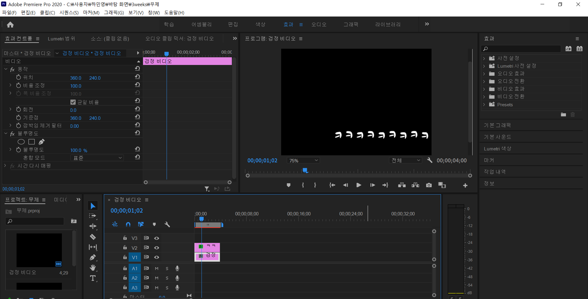

편집자를 택한 이유
일단 제가 이루고 싶은 직업은
영상편집자 입니다.
편집자 라는 직업을 선택하게 된 이유는 고3이 되기전인 겨울방학에 진로에 대해 많은 고민을 해봤었습니다.
어느날 똑같은 일상을 지내며 유튜브를 보고있었는데 한 유튜버를 보았습니다.
그유튜버는 MCN회사를 차리며 편집자나 크리에이터에 관심있는 사람들을 위해 도움을 주고 있었습니다.
거기서 호기심을 느낀 저는
"한번 편집이나 해볼까?"라는 호기심에 프로그램에 참여하게 되었고, 결국은 편집자를 진로로 택하여 꾸준히 노력하게 된 것 입니다.
====================================================================================================================================
작업창 ↓

위의 작업창에서 만든 완성품!
오류걸림..